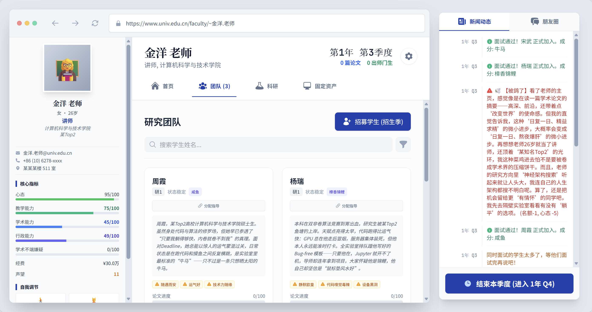

青椒模拟器 Tenure-Track Chili
扮演高校青年教师，在科研、教学、人际中挣扎晋升 —— LLM 让每一季度都长出独一无二的故事。
展开 · 怎么玩 / 技术
季度回合制：分配精力鞭策/安慰学生、申请基金、应对随机事件（报销风波、论文被抢发、学生退学危机…），AI 实时生成结算叙事。
- 核心张力：产出 vs 学生心理 vs 自己理智，没有最优解
- WeChili 即时通讯：用自然语言劝学生留校 / 读博
- "学术造假"分支、Breaking Bad 化学系彩蛋
- 小红书爆款："硕博生的尽头 game"
技术React · KAL Engine · LLM 叙事生成 · 多终点结算